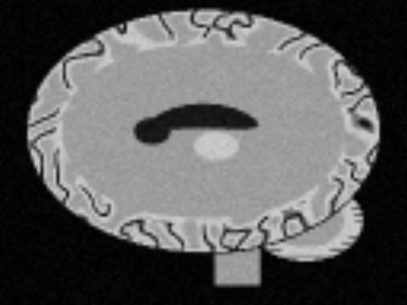

Spectrum
Voxel 20 × 20 × 20 mm · processed
Actual · real
Fitted baseline
MetabolitesRatios to Cr
| Metabolite | Position[ppm] | Height[a.u.] | Area[a.u.] | FWHM[ppm] | SNR[ratio] | / Cr[ratio] | Quality |
|---|---|---|---|---|---|---|---|
| NAA | 2.01 | 970.8 | 53.41 | 0.047 | 148.5 | 1.24 | Good |
| Cr | 3.03 | 756.5 | 43.00 | 0.047 | 115.7 | 1.00 | Good |
| Cho | 3.20 | 302.2 | 17.01 | 0.047 | 46.2 | 0.40 | Good |
| mI | 3.56 | 470.0 | 26.19 | 0.047 | 71.9 | 0.61 | Good |
| Cr2 | 3.92 | 382.1 | 21.06 | 0.047 | 58.4 | 0.49 | Good |
Axial Processed
RL
Coronal

Sagittal
Good Moderate Poor
